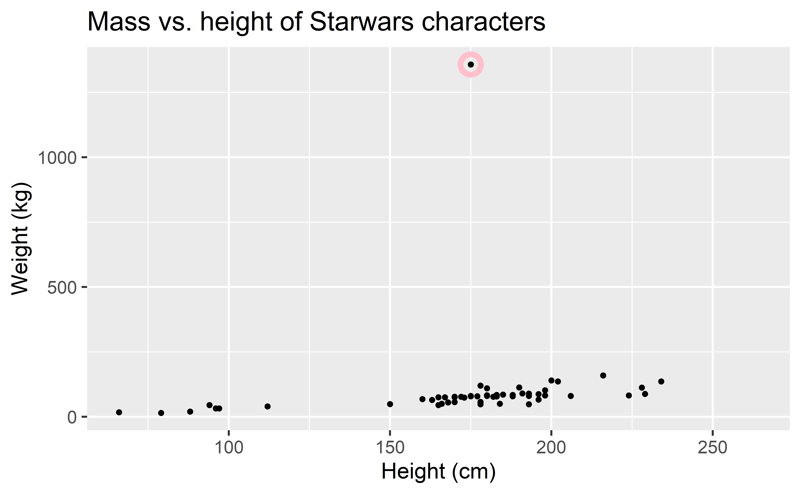
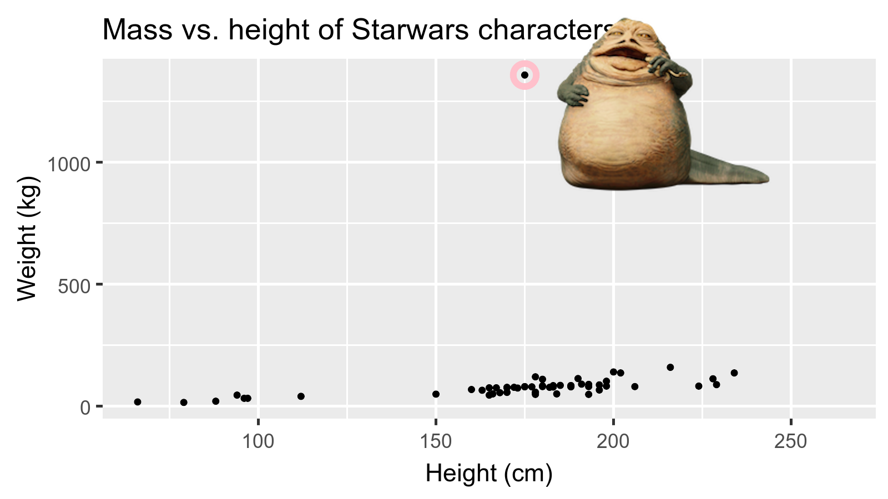
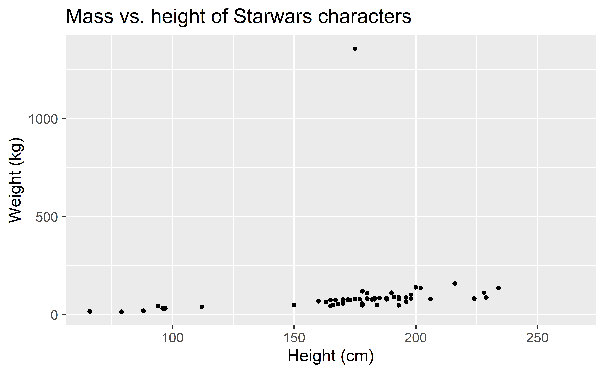
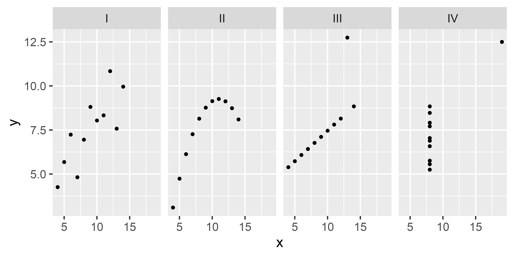
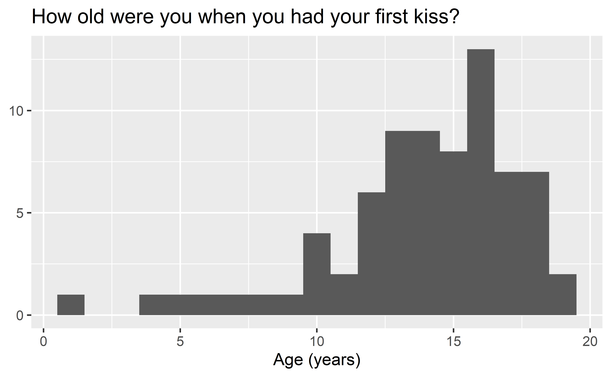
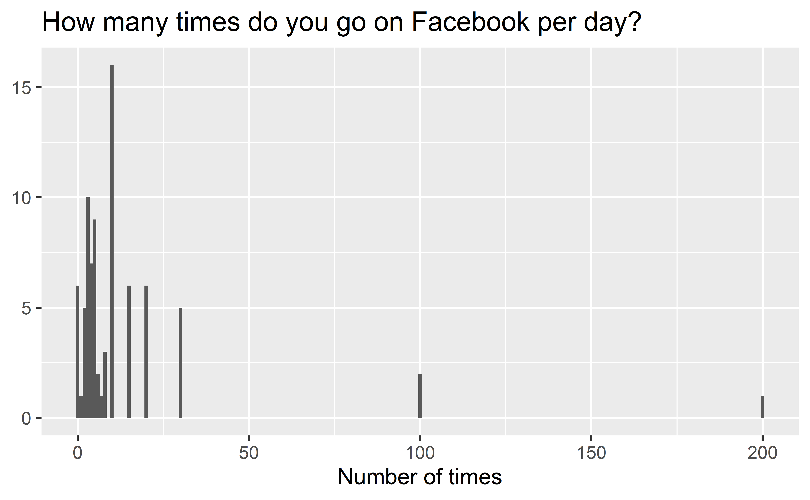

Data and visualisation
Data Science in a Box
layout: true
class: middle
What is in a dataset?
Dataset terminology
- Each row is an observation
- Each column is a variable
.small[]
Luke Skywalker

What’s in the Star Wars data?
Take a glimpse at the data:
glimpse(starwars)Rows: 87
Columns: 14
$ name <chr> "Luke Skywalker", "C-3PO", "R2-D2", "Darth V~
$ height <int> 172, 167, 96, 202, 150, 178, 165, 97, 183, 1~
$ mass <dbl> 77.0, 75.0, 32.0, 136.0, 49.0, 120.0, 75.0, ~
$ hair_color <chr> "blond", NA, NA, "none", "brown", "brown, gr~
$ skin_color <chr> "fair", "gold", "white, blue", "white", "lig~
$ eye_color <chr> "blue", "yellow", "red", "yellow", "brown", ~
$ birth_year <dbl> 19.0, 112.0, 33.0, 41.9, 19.0, 52.0, 47.0, N~
$ sex <chr> "male", "none", "none", "male", "female", "m~
$ gender <chr> "masculine", "masculine", "masculine", "masc~
$ homeworld <chr> "Tatooine", "Tatooine", "Naboo", "Tatooine",~
$ species <chr> "Human", "Droid", "Droid", "Human", "Human",~
$ films <list> <"The Empire Strikes Back", "Revenge of the~
$ vehicles <list> <"Snowspeeder", "Imperial Speeder Bike">, <~
$ starships <list> <"X-wing", "Imperial shuttle">, <>, <>, "TI~.question[ How many rows and columns does this dataset have? What does each row represent? What does each column represent?]
?starwars
.question[ How many rows and columns does this dataset have?]
.pull-left[]
class: middle
Exploratory data analysis
What is EDA?
- Exploratory data analysis (EDA) is an approach to analysing data sets to summarize its main characteristics
- Often, this is visual – this is what we’ll focus on first
- But we might also calculate summary statistics and perform data wrangling/manipulation/transformation at (or before) this stage of the analysis – this is what we’ll focus on next
Mass vs. height
.question[ How would you describe the relationship between mass and height of Starwars characters? What other variables would help us understand data points that don’t follow the overall trend? Who is the not so tall but really chubby character?]

Jabba!

class: middle
Data visualization
Data visualization
“The simple graph has brought more information to the data analyst’s mind than any other device.” — John Tukey
- Data visualization is the creation and study of the visual representation of data
- Many tools for visualizing data – R is one of them
- Many approaches/systems within R for making data visualizations – ggplot2 is one of them, and that’s what we’re going to use
ggplot2 \(\in\) tidyverse
.pull-left[] .pull-right[ - ggplot2 is tidyverse’s data visualization package - gg in “ggplot2” stands for Grammar of Graphics - Inspired by the book Grammar of Graphics by Leland Wilkinson]
Grammar of Graphics
.pull-left-narrow[ A grammar of graphics is a tool that enables us to concisely describe the components of a graphic] .pull-right-wide[]
.footnote[ Source: BloggoType]
Mass vs. height
ggplot(data = starwars, mapping = aes(x = height, y = mass)) +
geom_point() +
labs(title = "Mass vs. height of Starwars characters",
x = "Height (cm)", y = "Weight (kg)")Warning: Removed 28 rows containing missing values (geom_point).
.question[ - What are the functions doing the plotting? - What is the dataset being plotted? - Which variables map to which features (aesthetics) of the plot? - What does the warning mean?+]
ggplot(data = starwars, mapping = aes(x = height, y = mass)) +
geom_point() +
labs(title = "Mass vs. height of Starwars characters",
x = "Height (cm)", y = "Weight (kg)")Warning: Removed 28 rows containing missing values (geom_point)..footnote[ +Suppressing warning to subsequent slides to save space]
Hello ggplot2!
.pull-left-wide[ - ggplot() is the main function in ggplot2 - Plots are constructed in layers - Structure of the code for plots can be summarized as]
class: middle
Why do we visualize?
Anscombe’s quartet
.pull-left[] .pull-right[]
Summarising Anscombe’s quartet
quartet %>%
group_by(set) %>%
summarise(
mean_x = mean(x),
mean_y = mean(y),
sd_x = sd(x),
sd_y = sd(y),
r = cor(x, y)
)# A tibble: 4 x 6
set mean_x mean_y sd_x sd_y r
<fct> <dbl> <dbl> <dbl> <dbl> <dbl>
1 I 9 7.50 3.32 2.03 0.816
2 II 9 7.50 3.32 2.03 0.816
3 III 9 7.5 3.32 2.03 0.816
4 IV 9 7.50 3.32 2.03 0.817Visualizing Anscombe’s quartet

Age at first kiss
.question[ Do you see anything out of the ordinary?]

Facebook visits
.question[ How are people reporting lower vs. higher values of FB visits?]
